|
| .: 147 Bumper Removal / 147 Headlight clips-internals:. |
Ok, so its not the most catchie title, and this guide will cover simular ground
to the 156 bumper removal guide, but for those that have to change a sidelight
on a 147 or a headlight, I'm sure this will help you all out.
Note: This guide was created with a 3.2 147 GTA, the process may differ in other models
The problem: In my case, I pushed a bulb into the headlight unit and drop
the bulb retaining clips from both sides into the engine bay. So I needed to
(1) remove the bumper to remove the headlight to get the bulb out, (2) find the
retaining clips and find out how they work.
Prep:Tools and parts
Tools required...

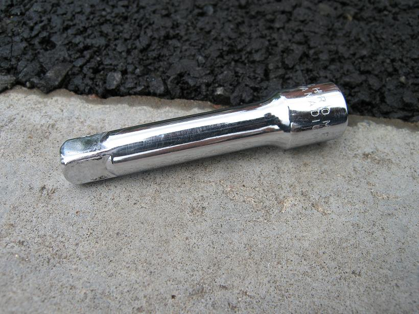
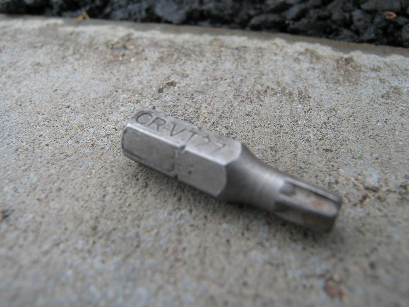
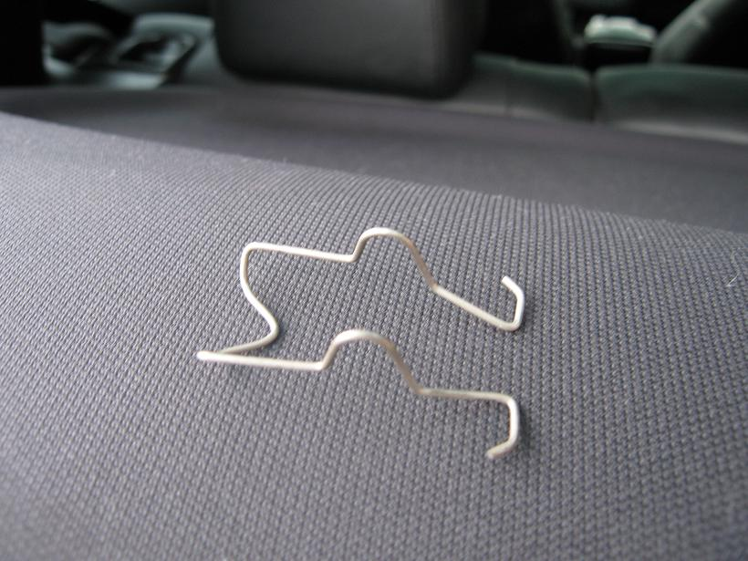
This is the thing that you've either lost or are struggling with.
Those of you that want to just know about the headlight unit and the clip, skip to the end.
2: I did all of the following with out jacking the car up, it makes like a little harder but its possible.
First loosen the bolts on top, you can remove them, but I'd leave that till later
I've marked the bolts in red, you will need the rachet + torx bit for these.
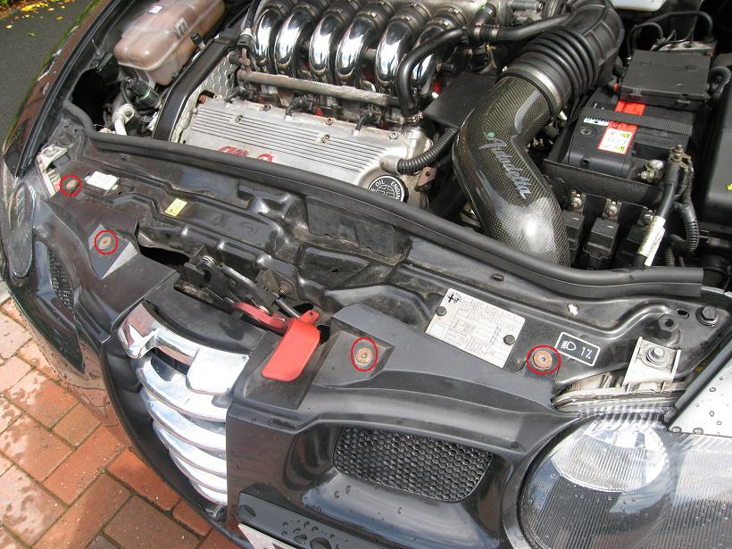
3:Then same rachet & torx bit remove the screw in the bottom of the bumper.
There are 5 screws at the bottom.
4:Next up is removing the lining from each side of the wheel arches.
This requires a little elbow grease, plus the rachet, philips attachment and rachet screwdriver.
Drivers side... (same for passenger side) You might need to turn the front wheels to get better access.
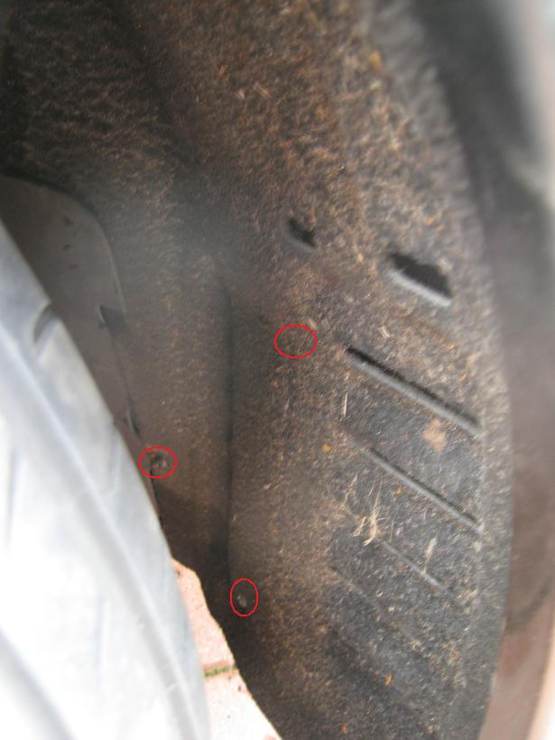
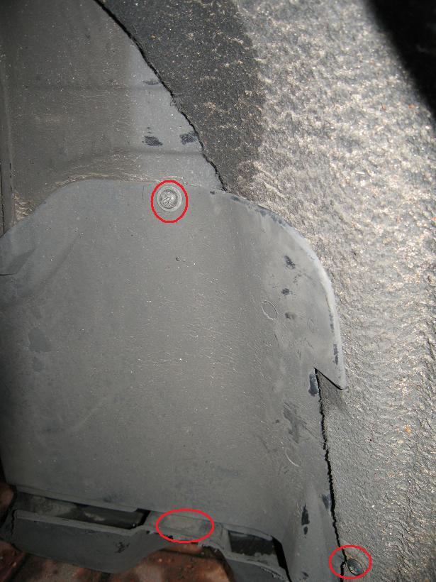
The lower screw on the right might not need to be removed, but it will make things easier.
Once you have remove the screws you will need to use a bit of force to pull the lining back
to let you get an arm into the front of the car.
5: Next step is to remove the two bolts on each side that hold the bumper on.
This is the view of the passengers side.
The bolt on the left will require the 4" extention bar, rachet and the 10mm socket piece + the 10mm spanner to hold the nut in place on top.
so its going to require a little bit of contortion, that or very small hands.
The right one (not shown very well in the pic) is the torx bit.
Both are removed from below.
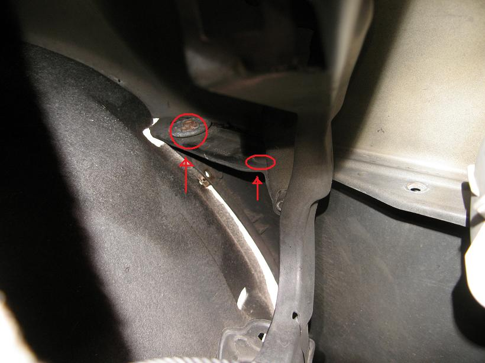
Once you've done one side, go do the other.
Now go check that all the botls are removed, including the top ones.
6: To pull the bumper off you will need to pull the sides outwards a little.
The pic show the drivers side section (front of the car is to the right).
You can see it slots out and has a couple of littl plastic bits to make sure lines up right on the car when you put it back on.
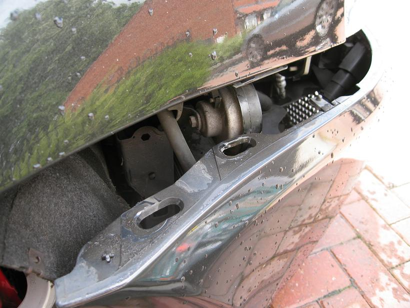
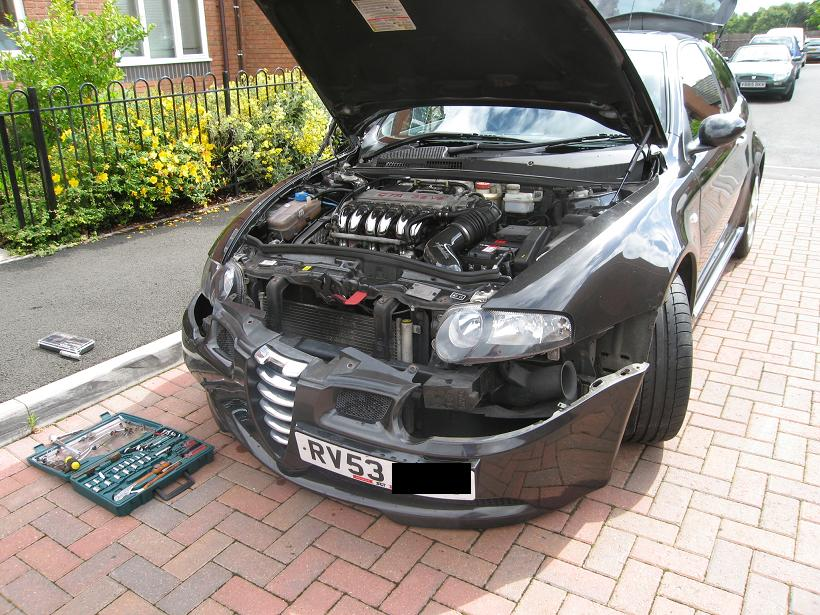
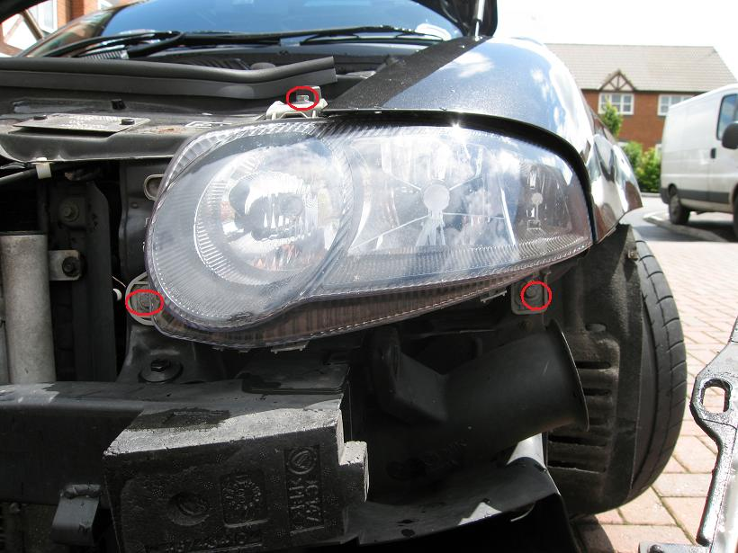
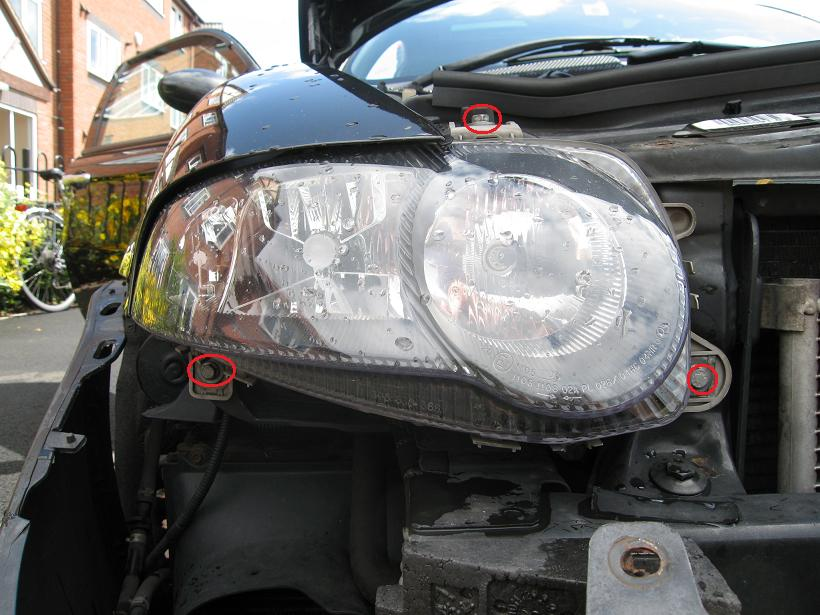
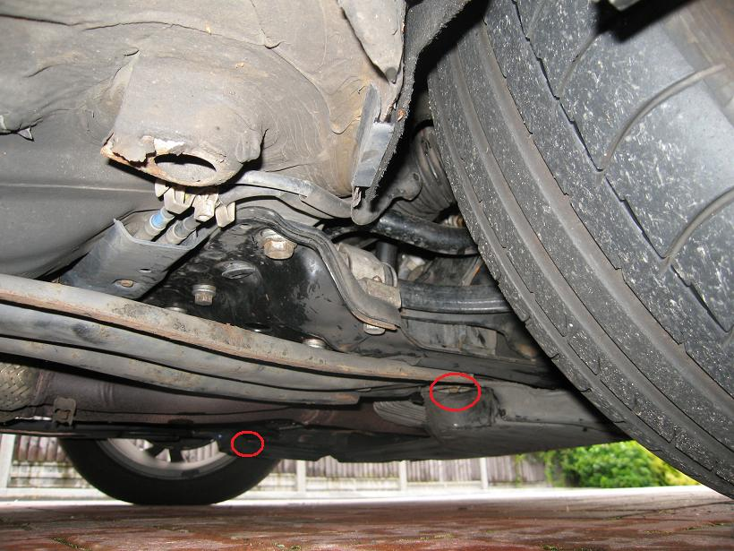
The Headlight units...
11: Now if you need to remove the unit to take out an old bulb or just because you broke one of the clips off, here are some helpful tips/pics.
The following two pictures show the drivers side unit. You can see how the bulb retrainer clip is meant to clip in.
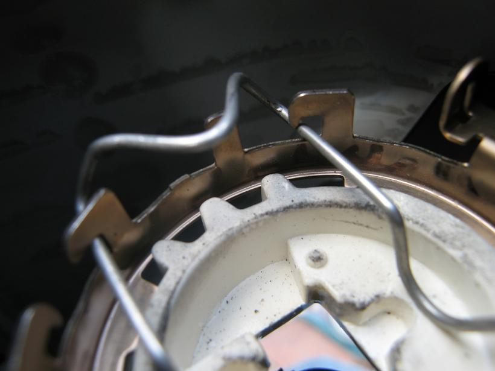
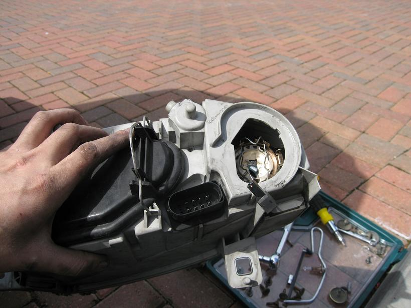
This pictures shows the orientation of the bulb. You can see the flat side is to the left, this is the same on both sides of the car.
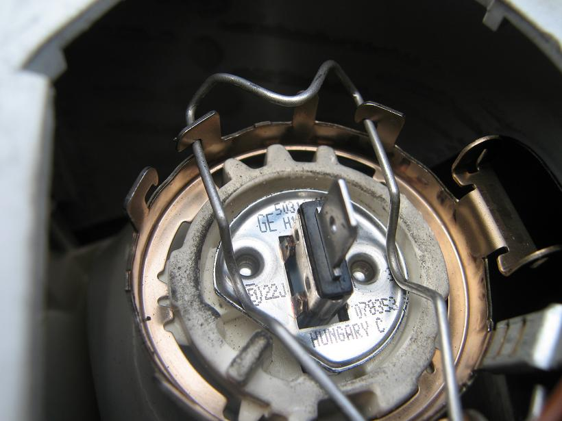
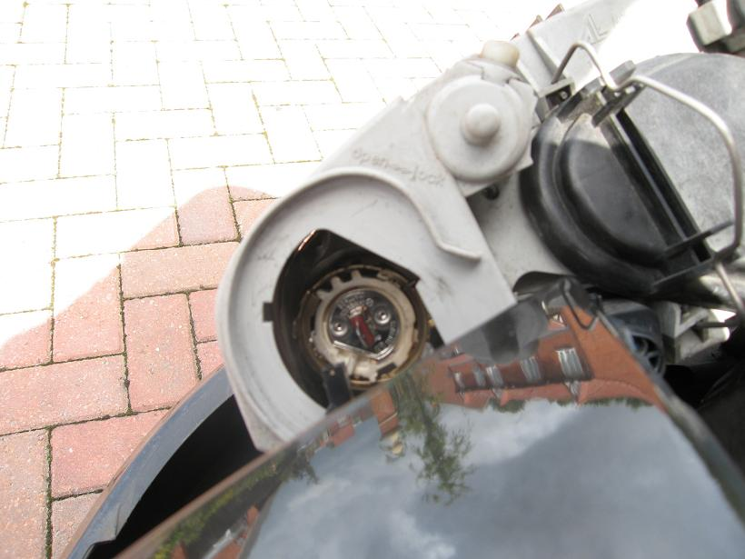
12: Go for a beer!!
| Jeff_Porter |
 |
| .: 147 Bumper Removal / 147 Headlight clips-internals:. |